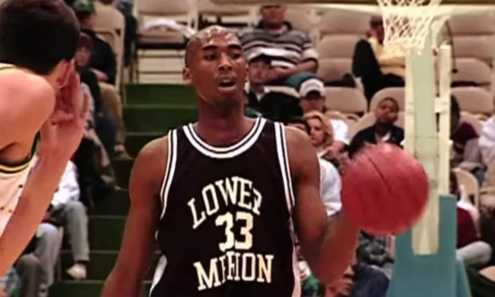
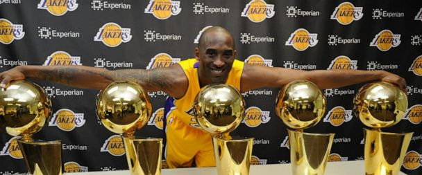
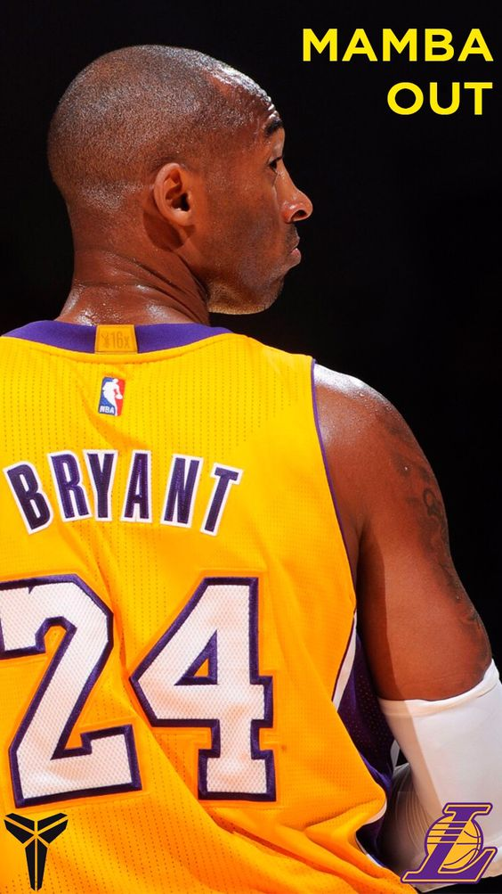
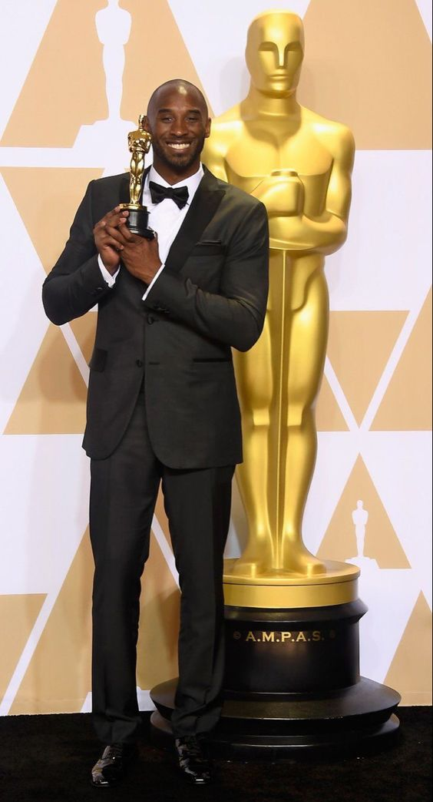
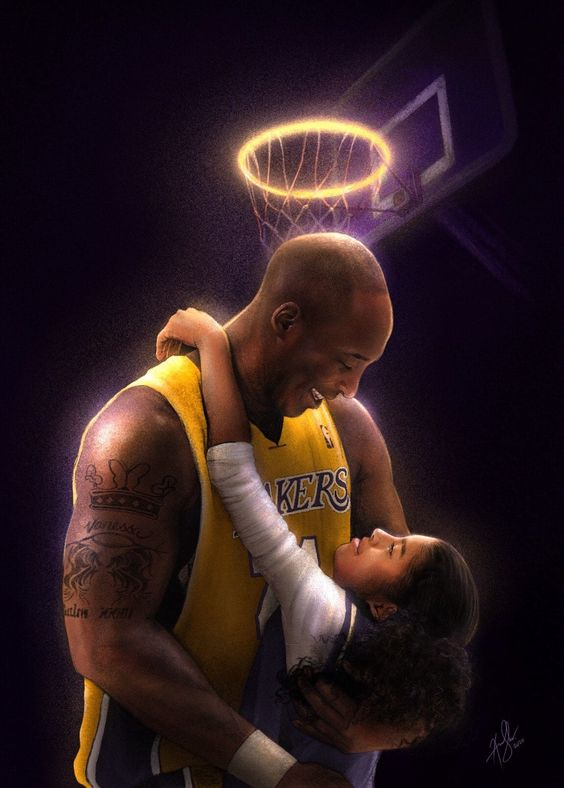
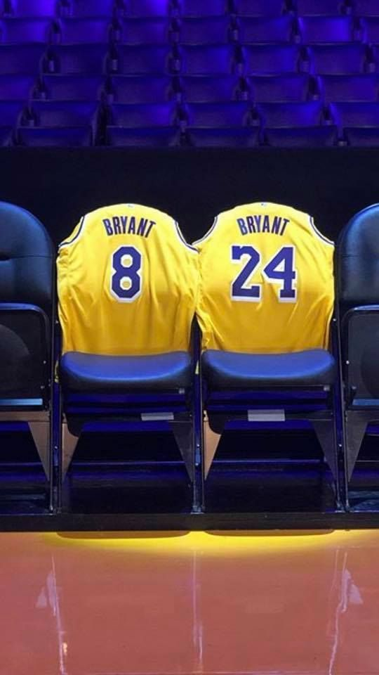

Early Life

Kobe Bean Bryant was born on August 23, 1978, in Philadelphia, Pennsylvania. His father, Joe "Jellybean" Bryant, was a professional basketball player who played for the Philadelphia 76ers, San Diego Clippers, and Houston Rockets.
Kobe spent part of his childhood in Italy while his father played professional basketball there. He learned to speak Italian and became a passionate soccer fan.
High School Career
After returning to the United States, Kobe attended Lower Merion High School in Ardmore, Pennsylvania. He quickly established himself as a standout basketball player and was named the Naismith High School Player of the Year in his senior year.
Kobe decided to skip college and enter the NBA draft straight out of high school.
This is a photo of Kobe Bryant during his high school years at Lower Merion High School in Pennsylvania.
NBA Career

Kobe was selected with the 13th overall pick in the 1996 NBA draft by the Charlotte Hornets, but was immediately traded to the Los Angeles Lakers. He played his entire 20-year NBA career with the Lakers, winning five NBA championships and earning numerous individual awards.
Kobe was known for his incredible work ethic and competitiveness, and he inspired a generation of young basketball players with his skill and determination. He was a 18-time NBA All-Star, a 15-time All-NBA selection, and a 12-time member of the NBA All-Defensive team.
Stats and Achievements
Kobe Bryant Career Stats
| Season | Team | Games Played | Minutes per Game | Points per Game | Rebounds per Game | Assists per Game | Steals per Game | Blocks per Game | Field Goal Percentage | Three-Point Percentage | Free Throw Percentage | |
|---|---|---|---|---|---|---|---|---|---|---|---|---|
| 1996-97 | Los Angeles Lakers | 71 | 15.5 | 7.6 | 1.9 | 1.3 | 0.7 | 0.3 | 41.7% | 37.5% | 81.9% | |
| 1997-98 | Los Angeles Lakers | 79 | 26.0 | 15.4 | 3.1 | 2.5 | 1.0 | 0.5 | 42.7% | 34.1% | 79.4% | |
| 1998-99 | Los Angeles Lakers | 50 | 37.9 | 19.9 | 5.3 | 3.8 | 1.7 | 0.5 | 46.5% | 34.9% | 84.5% | |
| 2005-06 | Los Angeles Lakers | 80 | 41.0 | 35.4 | 5.3 | 4.5 | 1.8 | 0.4 | 45.0% | 34.7% | 85.0% | |
| 2006-07 | Los Angeles Lakers | 77 | 41.1 | 31.6 | 5.7 | 5.4 | 1.4 | 0.5 | 46.3% | 34.1% | 86.8% | |
| 2007-08 | Los Angeles Lakers | 82 | 38.9 | 28.3 | 6.3 | 5.4 | 1.8 | 0.5 | 45.9% | 36.1% | 84.1% | |
| 2008-09 | Los Angeles Lakers | 82 | 36.1 | 26.8 | 5.2 | 4.9 | 1.5 | 0.5 | 46.7% | 35.1% | 86.8% | |
| 2009-10 | Los Angeles Lakers | 73 | 38.8 | 27.0 | 5.4 | 5.0 | 1.5 | 0.3 | 45.6% | 32.9% | 81.7% | |
| 2010-11 | Lakers | 82 | 33.9 | 25.3 | 5.1 | 4.7 | 1.2 | 0.2 | 3.0 | 45.1 | 32.3 | 84.6 |
| 2011-12 | Lakers | 58 | 38.5 | 27.9 | 5.4 | 4.6 | 1.2 | 0.3 | 3.7 | 43.0 | 30.3 | 84.0 |
| 2012-13 | Lakers | 78 | 38.6 | 27.3 | 5.6 | 6.0 | 1.4 | 0.3 | 3.7 | 46.3 | 32.4 | 83.9 |
| 2013-14 | Lakers | 6 | 29.5 | 13.8 | 4.3 | 6.3 | 1.3 | 0.2 | 3.8 | 42.5 | 20.0 | 85.2 |
| 2015-16 | Lakers | 66 | 28.2 | 17.6 | 3.7 | 2.8 | 0.9 | 0.2 | 2.0 | 35.8 | 28.5 | 82.8 |
Kobe's Achievements and Awards
Kobe's career was filled with incredible achievements and awards. Some of his most notable accomplishments include:
- Five-time NBA Champion (2000, 2001, 2002, 2009, 2010)
- 18-time NBA All-Star (1998, 2000-2016)
- Four-time NBA All-Star Game MVP (2002, 2007, 2009, 2011)
- Two-time NBA Finals MVP (2009, 2010)
- Eleven-time All-NBA First Team (2002-2004, 2006-2013)
- Nine-time NBA All-Defensive First Team (2000, 2003-2004, 2006-2011)
- NBA scoring champion (2006 and 2007)
- Two Olympic gold medals (2008 and 2012)
- Naismith Prep Player of the Year (1996)
- ACC Player of the Year (1996)
- NBA Slam Dunk Contest champion (1997)
- Academy Award for Best Animated Short Film for his film "Dear Basketball" (2018)
Kobe was also known for his clutch performances in high-pressure situations. He was famous for taking over games in the fourth quarter and hitting game-winning shots. He had a total of 27 game-winning buzzer-beaters in his career, which is an NBA record.
Kobe's Influence
Kobe Bryant had a massive impact on the world of basketball and beyond. His work ethic and drive to be the best inspired countless people around the world. His "Mamba Mentality" philosophy, which emphasizes hard work, dedication, and perseverance, has become a guiding principle for many athletes and non-athletes alike.
Off the court, Kobe was a philanthropist and an advocate for various causes. He founded the Kobe and Vanessa Bryant Family Foundation to improve the lives of young people and their families in need. He was also an ambassador for the After-School All-Stars program, which provides after-school programs to children across the United States.
Kobe's tragic death on January 26, 2020, shocked the world and left a void in the basketball community. However, his legacy lives on through his impact on the game of basketball and the countless lives he touched throughout his career and beyond.
Kobe's Endorsements and Business Ventures
Throughout his career, Kobe Bryant was one of the most marketable athletes in the world. He had numerous high-profile endorsements and business ventures, including:
- Nike: Kobe had a long-standing endorsement deal with Nike, which produced his signature shoe line, the "Kobe" series.
- Sprite: Kobe was a spokesperson for Sprite and appeared in several commercials for the brand.
- Call of Duty: Kobe appeared in a commercial for the video game "Call of Duty: Black Ops" alongside other celebrities.
- Hublot: Kobe was an ambassador for the luxury watch brand Hublot and even had his own limited-edition watch.
- BodyArmor: Kobe invested in the sports drink company BodyArmor and became one of its largest shareholders.
- Granity Studios: Kobe founded the multimedia production company Granity Studios, which produced the animated short film "Dear Basketball" and other content.
Kobe's business ventures and endorsements were highly successful and made him one of the wealthiest athletes in history. However, his focus was always on basketball, and he often said that his business ventures were simply a way to ensure financial security for his family after he retired from the NBA.
Kobe's Legacy
Kobe Bryant's legacy extends far beyond his accomplishments on the basketball court. He was a role model for millions of people around the world, inspiring them to work harder, push themselves further, and never give up on their dreams. His "Mamba Mentality" philosophy has become a mantra for many athletes and non-athletes alike, emphasizing the importance of hard work, dedication, and perseverance in achieving success.
Kobe's tragic death on January 26, 2020, shook the world and left a void in the basketball community. However, his legacy lives on through his impact on the game of basketball and the countless lives he touched throughout his career and beyond. His incredible work ethic, fierce competitive spirit, and unwavering dedication to his craft will continue to inspire generations to come.

Remembering Kobe Bryant
Following his untimely death with his daughter in a helicopter crash on the 6th january 2020 , Kobe Bryant was honored by fans, fellow athletes, and public figures around the world. The NBA paid tribute to Kobe in a number of ways, including a moment of silence before every game and the renaming of the NBA All-Star Game MVP award to the "Kobe Bryant MVP Award."
On February 24, 2020, the Staples Center in Los Angeles hosted a public memorial service for Kobe and his daughter Gianna, who also tragically passed away in the helicopter crash. The memorial was attended by thousands of people, including many celebrities and NBA players, and featured emotional speeches from Kobe's wife Vanessa, his former teammate Shaquille O'Neal, and others.
Kobe's impact on the world of basketball and beyond will never be forgotten. He inspired countless people to pursue their dreams and achieve greatness, and his legacy will continue to live on through the countless lives he touched.
Conclusion
Kobe Bryant was a basketball legend and a cultural icon. His talent, drive, and dedication to the game of basketball made him one of the greatest players of all time, and his impact on the sport and popular culture will never be forgotten. Kobe's legacy will continue to inspire future generations of athletes and fans for years to come.
Rest in peace 8,24 Kobe Bryant.